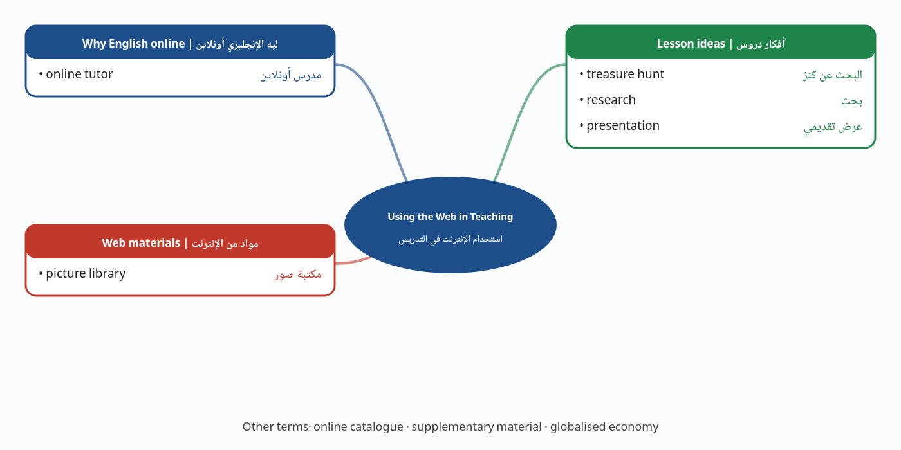

Learn TEFL Practical
⭐
0
🔥
استمر!
🎓
كورس TEFL العملي ٤١: استخدام الإنترنت في التدريس
📊
المستوى: متوسط
درس ٤١
🎓
TEFL
📄 حمّل PDF الدرس
📝 ملخص الدرس (عربي) PDF
📝 Lesson Summary (English) PDF
🧠 الخريطة الذهنية PDF
🧠 شوف الخريطة الذهنية للدرس

📎 ملحقات
روابط
EFL Online (online teaching)
Pearson ELT
National Geographic Learning (Cengage)
Cambridge English catalogue (TOEFL/TOEIC)
Oxford University Press ELT
Macmillan English resources
University of Michigan Press ELT
TESOL: read and publish
→
الدرس اللي قبله
كل دروس الكورس